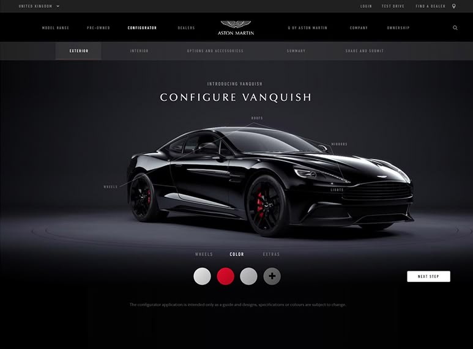

1
<html>
Frontend
Es la parte visible del sitio. Muestra contenido y diseño en el navegador y responde a lo que hace el usuario.
Espacio para imagen
frontend.jpg
frontend.jpg

Funcionamiento
Todo sitio web se apoya en cuatro piezas que trabajan juntas: lo que el usuario ve, el servidor que procesa, los datos que se guardan y la forma de publicarlo.
Es la parte visible del sitio. Muestra contenido y diseño en el navegador y responde a lo que hace el usuario.

Es el servidor que procesa solicitudes, aplica la lógica del negocio y protege el acceso a los datos.
Guardan y organizan la información de usuarios, productos y contenidos para consultarla rápidamente.
Publica el sitio en un servidor o la nube, con control de versiones para trabajar en equipo sin perder cambios.
Cuando el frontend, el backend, la base de datos y el despliegue trabajan de forma coordinada, el sitio es rápido, seguro y fácil de mantener.
Ver el proceso completo